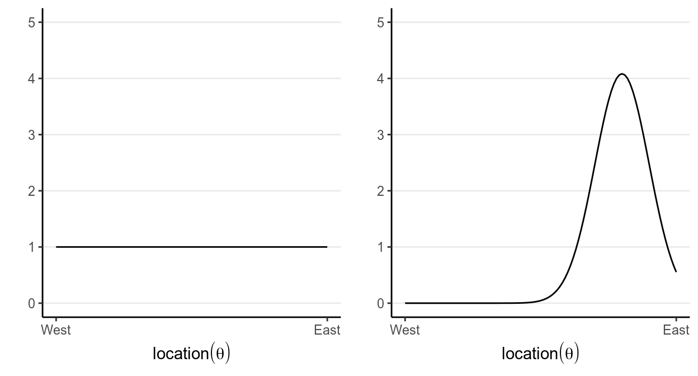
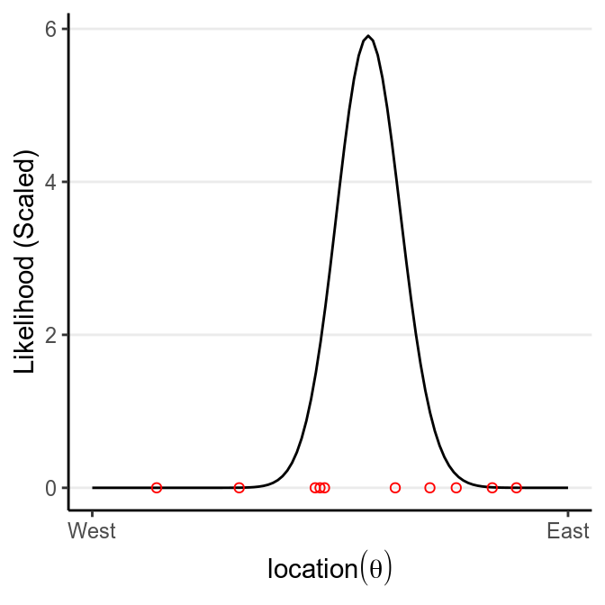
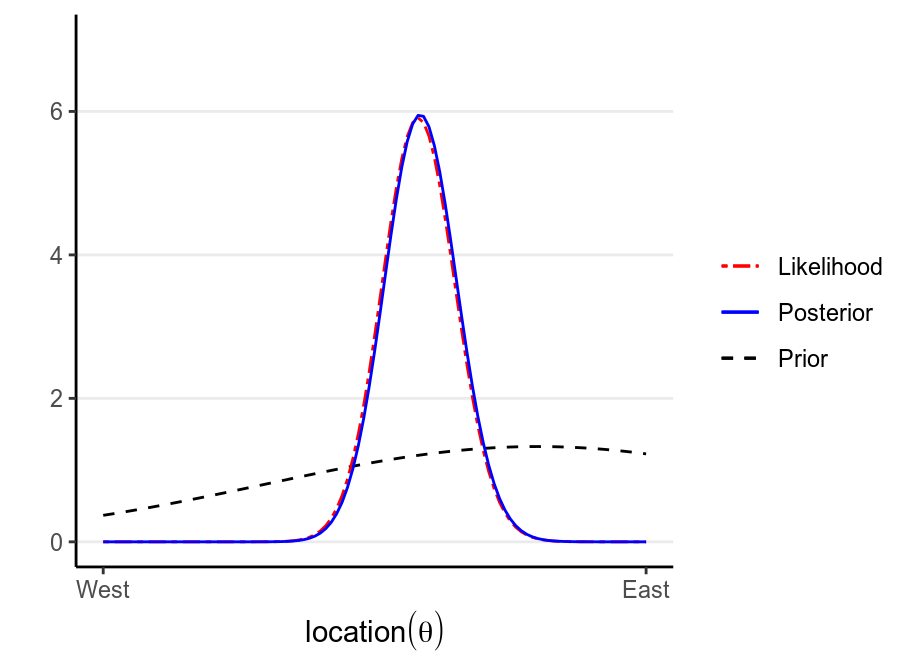
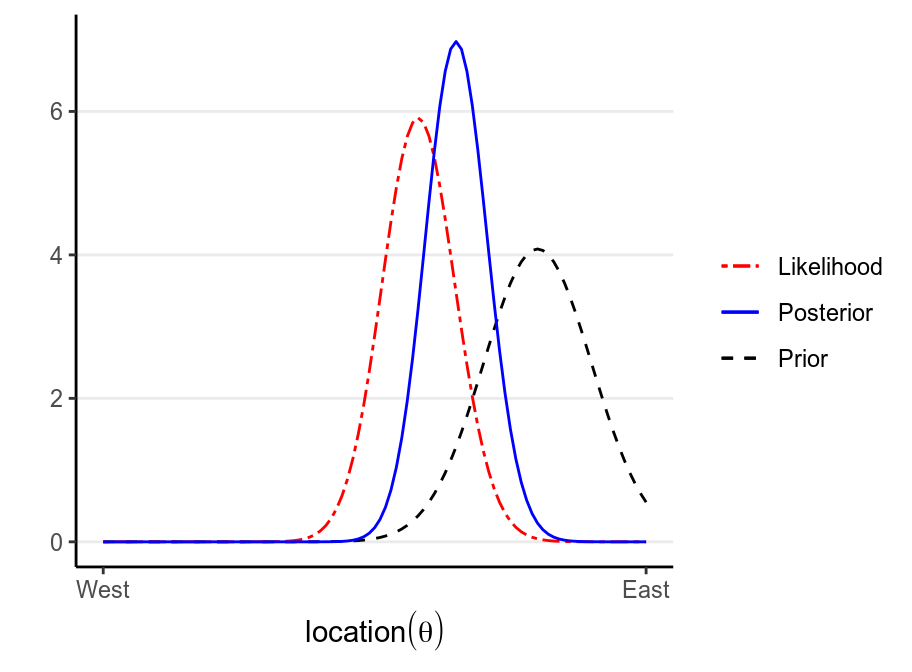

Chapter 1 Introduction
There will be some math in this notes. Don’t worry if you feel the math is challenging; for applied focused students, it is much more important to understand the concepts of Bayesian methods than to understand the mathematical symbols, as they usually can be handled by the software.
1.1 History of Bayesian Statistics
Here is a nice brief video that covers some of the 250+ years of history of Bayesian statistics: https://www.youtube.com/watch?v=BcvLAw-JRss. If you are interested in learning more about the story, check out the nice popular science book, “The theory that would not die,” by Sharon Bertsch McGrayne
1.1.1 Thomas Bayes (1701–1762)
You may find a biography of Bayes from https://www.britannica.com/biography/Thomas-Bayes. There is also a nice story in the book by Lambert (2018). He was an English Presbyterian minister. The important work he wrote that founded Bayesian statistics was “An Essay towards solving a Problem in the Doctrine of Chances”, which he did not publish and was later discovered and edited by his friend, Richard Price, after Bayes’s death1
1.1.2 Pierre-Simon Laplace (1749–1827)
Laplace, a French Mathematician, was an important figure in not just Bayesian statistics, but also in other areas of mathematics, astronomy, and physics. We actually know much more the work by Laplace than by Bayes, and Laplace has worked independently on the inverse probability problem (i.e., \(P[\text{Parameter} | \text{Data}]\)). Indeed, he was credited for largely formalizing Bayesian interpretation of probability and most of the machinery for Bayesian statistics, and making it a useful technique to be applied to different problems, despite the discipline being called “Bayesian.” His other contributions include the methods of least square and the central limit theorem. See a short biography of him at https://www.britannica.com/biography/Pierre-Simon-marquis-de-Laplace.
1.1.3 20th Century
Until early 1920s, the inverse probability method, which is based on what is now called Bayes’s Theorem, is pretty much the predominant point of view of statistics. Then a point of view later known as frequentist statistics arrived, and quickly became the mainstream school of thinking for statistical inferences, and is still the major framework for quantitative research. In the early 1920s, frequentist scholar, most notably R. A. Fisher and Jerzy Neyman, criticized Bayesian inference for the use of subjective elements in an objective discipline. In Fisher’s word,
The theory of inverse probability is founded upon an error, and must be wholly rejected—Fisher, 1925
Ironically, the term Bayesian was first used in one of Fisher’s work. And interestingly, Fisher actually thought he “have been doing almost exactly what Bayes had done in the 18th century.”2
Despite criticisms from frequentist scholars, Bayesian methods has been used by scholars in the Allies in World War II, such as Alan Turing, in an algorithm to break coded messages in the Enigma machine that the German Navy used to communicate. However, because of the more complex mathematics involved in Bayesian statistics, Bayesian statistics is limited to straight-forward problems and theoretical discussions until the early 1980s, when computing speed increases tremendously and makes Markov Chain Monte Carlo—the major algorithm for Bayesian estimation in modern Bayesian statistics—feasible. With the help of increased computing speed, Bayesian statistics has come back and been used as an alternative way of thinking, especially given growing dissatisfaction towards the misuse of frequentist statistics by some scholars across disciplines. Bayesian estimation methods have also been applied to many new research questions where frequentist approaches work less well, as well as in big data analytics and machine learning.
1.2 Motivations for Using Bayesian Methods
Based on my personal experience, Bayesian methods is used quite often in statistics and related departments, as it is consistent and coherent, as contrast to frequentist where a new and probably ad hoc procedure needed to be developed to handle a new problem. For Bayesian, as long as you can formulate a model, you just run the analysis the same way as you would for simpler problems, or in Bayesian people’s word “turning the Bayesian crank,” and likely the difficulties would be more technical than theoretical, which is usually solved with better computational speed.
Social and behavioral scientists are relatively slow to adopt the Bayesian method, but things have been changing. In a recently accepted paper by van de Schoot et al. (2017), the authors reviewed papers in psychology between 1990 to 2015 and found that whereas less than 10% of the papers in 1990 to 1996 mentioned “Bayesian”, the proportion increased steadily and was found in close to 45% of the psychology papers in 2015. Among studies using Bayesian methods, more than 1/4 cited computational problems (e.g., nonconvergence) in frequentist methods as a reason, and about 13% cited the need to incorporate prior knowledge into the estimation process. The other reasons included the flexibility of Bayesian methods for complex and nonstandard problems, and the use of techniques traditionally attached to Bayesian such as missing data and model comparisons.
1.2.1 Problem with classical (frequentist) statistics
The rise of Bayesian methods is also related to the statistical reform movement in the past two decades. The problem is that applied researchers are obsessed with \(p < .05\) and often misinterpreted a small \(p\)-value as something that it isn’t (read Gigerenzer 2004). Some scholars coined the term \(p\)-hacking to refer to the practice of obtaining statistical significance by choosing to test the data in a certain way, either consciously or subconsciously (e.g., dichotomizing using mean or median, trying the same hypothesis using different measures of the same variable, etc). This is closely related to the recent “replication crisis” in scientific research, with psychology being in the center under close scrutiny.
Bayesian is no panacea to the problem. Indeed, if misused it can give rise to the same problems as statistical significance. My goal in this class is to help you appreciate the Bayesian tradition of embracing the uncertainty in your results, and adopt rigorous model checking and comprehensive reporting rather than relying merely on a \(p\)-value. I see this as the most important mission for someone teaching statistics.
1.3 Probability
There are multiple perspectives for understanding probability.3 What you’ve learned in your statistics training are based on the frequentist interpretation of probability (and thus frequentist statistics), whereas what you will learn in this class have the foundation on the subjectivist interpretation of probability. Although, in my opinions, the impact of these differences in interpretations of probability on statistical practices is usually overstated, understanding the different perspectives on probability is helpful for understanding the Bayesian framework.
You don’t need to commit to one interpretation of probability in order to conduct Bayesian data analysis.
1.3.1 Classical Interpretation
This is an earlier perspective, and is based on counting rules. The idea is that probability is equally distributed among all “indifferent” outcomes. “Indifferent” outcomes are those where a person does not have any evidence to say that one outcome is more likely than another. For example, when one throws a die, one does not think that a certain number is more likely than another, unless one knows that the die is biased. In this case, there are six equally likely outcome, and so the probability of each outcome is 1 / 6.

1.3.2 Frequentist Interpretation
The frequentist interpretation states that probability is essentially the long-term relative frequency of an outcome. For example, to find the probability of getting a “1” when throwing a die, one can repeat the experiment many times, as illustrated below:
| Trial | Outcome |
|---|---|
| 1 | 2 |
| 2 | 3 |
| 3 | 1 |
| 4 | 3 |
| 5 | 1 |
| 6 | 1 |
| 7 | 5 |
| 8 | 6 |
| 9 | 3 |
| 10 | 3 |
And we can plot the relative frequency of “1”s in the trials:

As you can see, with more trials, the relative frequency approaches 1 / 6. It’s the reason why in introductory statistics, many of the concepts require you to think in terms of repeated sampling (e.g., sampling distribution, \(p\)-values, standard errors, confidence intervals), because probability in this framework is only possible when the outcome can be repeated. It’s also the reason why we don’t talk about something like:
- the probability of the null hypothesis being true, or
- the probability that the population mean is in the interval [75.5, 80.5],
because the population is fixed and cannot be repeated. Only the samples can be repeated, so probability in frequentist statistics is only about samples.
1.3.3 Problem of the single case
Because of the frequentist’s reference to long-term frequency, under this framework it does not make sense to talk about probability of an event that cannot be repeated. For example, it does not make sense to talk about the probability that the Democrats will win the 2020 US Presidential Election, or the probability that the LA Rams winning the 2019 Super Bowl (they didn’t), or the probability that it rained on Christmas Day in LA in 2018, because all these are specific events that cannot be repeated. The problem is that it is common for lay people to talk about probabilities or chances for these events, and so the frequentist interpretation is limited for these problems.
1.3.4 Subjectivist Interpretation
The frequentist interpretation is sometimes called the “objectivist view”, as the reference of probability is based on empirical evidence of long-term relative frequency (albeit hypothetical in many cases). In contrast, the subjectivist view of probability is based on one’s belief. For example, when I say that the probability of getting a “1” from rolling a die is 1 / 6, it reflects the state of my mind about the die. My belief can arise from different sources: Maybe I make the die and know it is a fair one; maybe I saw someone throwing the die 1,000 times and the number of “1”s was close to 1,000 / 6, or maybe someone I trust and with authority says that the die has a 1-in-6 chance of showing a “1”.
The “subjective” component has been criticized a lot by frequentist scholars, sometimes unfairly. To be clear, what “subjective” here means is that probability reflects the state of one’s mind instead of the state of the world, and so it is totally fine that two people can have different beliefs about the same event. However, it does not mean that probability is arbitrary, as the beliefs are subjected to the constraints of the axioms of probability as well as the condition that the person possessing such beliefs are rational.4 Therefore, if two persons are exposed to the same information, they should form similar, though likely not identical, beliefs about the event.
The subjective interpretation works perfectly fine with single events, as one can have a belief about whether it rains on a particular day or a belief about a particular election result.
1.3.5 Basics of Probability
Kolmogorov axioms:
- For an event \(A_i\) (e.g., getting a “1” from throwing a die)
- \(P(A_i) \geq 0\) [All probabilities are non-negative]
- \(P(A_1 \cup A_2 \cup \cdots) = 1\) [Union of all possibilities is 1]
- \(P(A_1) + P(A_2) = P(A_1 \text{ or } A_2)\) [Mutually exclusive events]
Consider two events, for example, on throwing a die,
- \(A\): The number is odd
- \(B\): The number is larger than or equal to 4
Assuming that die is (believed to be) fair, you can easily verify that the probability of \(A\) is \(P(A)\) = 3 / 6 = 1 / 2, and the probability of \(B\) is also \(P(B)\) = 3 / 6 = 1 / 2.
1.3.5.1 Conditional Probability
Conditional probability is the probability of an event given some other information. In the real world, you can say that everything is conditional. For example, the probability of getting an odd number on throwing a die is 1/2 is conditional on the die being fair. We use \(P(A | B)\) to represent the the conditional probability of event \(A\) given event \(B\)..
Continuing from the previous example, \(P(A | B)\) is the conditional probability of getting an odd number, knowing that the number is at least 4. By definition, the conditional probability is the probability that both \(A\) and \(B\) happen ( written as \(A \cap B\) and pronounced as A–cap–B or A–intersection–B), divided by the probability that \(B\) happen.
\(P(A | B) = \frac{P(A \cap B)}{P(B)}\)
In the example, \(P(A \cap B)\) = 1/6, because 5 is the only even number \(\geq\) 4 when throwing a die. Thus, \[\begin{align} P(A | B) & = 1 / 3 \\ & = \frac{P(A \cap B)}{P(B)} \\ & = \frac{1 / 6}{1 / 2} \end{align}\]
This picture should make it clear:

1.3.5.2 Independence
Two events, \(A\) and \(B\), are independent if
\(P(A | B) = P(A)\)
This means that any knowledge of \(B\) does not (or should not) affect one’s belief about \(A\). In the example, obviously \(A\) and \(B\) are not independent, because once we know that the number if 4 or above, it changes the probability of whether it is an odd number or not.
It can also be expressed as
With independence, \(P(A \cap B) = P(A) P(B)\)
1.3.5.3 Law of Total Probability
When we talk about conditional probability, like \(B_1\) = 4 or above and \(B_2\) = 3 or below, we can get \(P(A | B_1)\) and \(P(A | B_2)\) (see the figure below), we refer \(P(A)\) as the marginal probability, meaning that the probability of \(A\) without knowledge of \(B\).

If \(B_1, B_2, \cdots, B_n\) are all mutually exclusive possibilities for an event (so they add up to a probability of 1), then by the law of total probability,
\[\begin{align} P(A) & = P(A \cap B_1) + P(A \cap B_2) + \cdots + P(A \cap B_n) \\ & = P(A | B_1)P(B_1) + P(A | B_2)P(B_2) + \cdots + P(A | B_n) P(B_n) \\ & = \sum_{k = 1}^n P(A | B_k) P(B_k) \end{align}\]
1.4 Bayes’s Theorem
The Bayes’s theorem is, surprisingly (or unsurprisingly), very simple:
\[P(B | A) = \frac{P(A | B) P(B)}{P(A)}\]
More generally, we can expand it to incorporate the law of total probability tomake it more applicable to data analysis. Consider \(B_i\) as one of the \(n\) many possible mutually exclusive events, then \[\begin{align} P(B_i | A) & = \frac{P(A | B_i) P(B_i)}{P(A)} \\ & = \frac{P(A | B_i) P(B_i)} {P(A | B_1)P(B_1) + P(A | B_2)P(B_2) + \cdots + P(A | B_n)P(B_n)} \\ & = \frac{P(A | B_i) P(B_i)}{\sum_{k = 1}^n P(A | B_k)P(B_k)} \end{align}\]
If \(B_i\) is a continuous variable, we will replace the sum by an integral, \[P(B_i | A) = \frac{P(A | B_i) P(B_i)}{\int_k P(A | B_k)P(B_k)}\] The denominator is not important for practical Bayesian analysis, therefore, it is sufficient to write the above equality as
\[P(B_i | A) \propto P(A | B_i) P(B_i)\]
1.4.1 Example 1: Base rate fallacy (From Wikipedia)
A police officer stops a driver at random and do a breathalyzer test for the driver. The breathalyzer is known to detect true drunkenness 100% of the time, but in 1% of the cases it gives a false positive when the driver is sober. We also know that in general, for every 1,000 drivers passing through that spot, one is driving drunk. Suppose that the breathalyzer shows positive for the driver. What is the probability that the driver is truly drunk?
\(P(\text{positive} | \text{drunk}) = 1\)
\(P(\text{positive} | \text{sober}) = 0.01\)
\(P(\text{drunk}) = 1 / 1000\)
\(P(\text{sober}) = 999 / 1000\)
Using Bayes’ Theorem,
\[\begin{align} P(\text{drunk} | \text{positive}) & = \frac{P(\text{positive} | \text{drunk}) P(\text{drunk})} {P(\text{positive} | \text{drunk}) P(\text{drunk}) + P(\text{positive} | \text{sober}) P(\text{sober})} \\ & = \frac{1 \times 0.001}{1 \times 0.001 + 0.01 \times 0.999} \\ & = 100 / 1099 \approx 0.091 \end{align}\]
So there is less than 10% chance that the driver is drunk even when the breathalyzer shows positive.
You can verify that with a simulation using R:
># truly_drunk
># drunk sober
># 100 99900breathalyzer_test <- ifelse(truly_drunk == "drunk",
# If drunk, 100% chance of showing positive
"positive",
# If not drunk, 1% chance of showing positive
sample(c("positive", "negative"), 999000,
replace = TRUE, prob = c(.01, .99)))
# Check the probability p(positive | sober)
table(breathalyzer_test[truly_drunk == "sober"])>#
># negative positive
># 98903 997# 997 / 99900 = 0.00997998, so the error rate is less than 1%
# Now, Check the probability p(drunk | positive)
table(truly_drunk[breathalyzer_test == "positive"])>#
># drunk sober
># 100 9971.5 Bayesian Statistics
Bayesian statistics is a way to estimate some parameter \(\theta\) (i.e., some
quantities of interest, such as population mean, regression coefficient, etc) by
applying the Bayes’ Theorem.
> \[P(\theta = t | y) \propto P(y | \theta = t) P(\theta = t)\]
There are three components in the above equality:
- \(P(y | \theta = t)\), the probability that you observe the datum \(y\), assuming
that the parameter \(\theta\) has a value \(t\); this is called the
likelihood(Note: It is the likelihood of \(\theta\), but probability about \(y\)) - \(P(\theta = t)\), the probability that \(\theta\) has a value of \(t\), without
referring to the datum \(y\). This usually requires appeals to one’s degree of
belief, and so is called the
prior - \(P(\theta = t | y)\), the probability that \(\theta\) has a value of \(t\), after
observing the datum \(y\); this is called the
posterior
This is different from the classical/frequentist statistics, which focuses solely on the likelihood function.5 In Bayesian statistics, the goal is to update one’s belief about \(\theta\) based on the observed datum \(y\).
1.5.1 Example 2: Locating a Plane
(reference: http://87.106.45.173:3838/felix/BayesLessons/BayesianLesson1.Rmd)
Consider a highly simplified scenario of locating a missing plane in the sea. Assume that we know the plane, before missing, happened to be flying on the same latitude, heading west across the Pacific, so we only need to find the longitude of it. We want to go out to collect debris (data) so that we can narrow the location (\(\theta\)) of the plane down.
We start with our prior. Assume that we have some rough idea that the plane should be, so we express our belief in a probability distribution like the following:

which says that our belief is that the plane is about twice more likely to be towards the east than towards the west. Below are two other options for priors (out of infinitely many), one providing virtually no information and the other encoding stronger information:

The prior is chosen to reflect the researcher’s belief, so it is likely that different researchers will formulate a different prior for the same problem, and that’s okay as long as the prior is reasonable and justified. Later we will learn that in regular Bayesian analyses, with a moderate sample size different priors generally make only a negligible differences.
Now, assume that we have collected debris in the locations shown in the graph,

Now, from Bayes’s Theorem,
\[\text{Posterior Probability} \propto \text{Prior Probability} \times \text{Likelihood}\]
So we can simply multiply the prior probabilities and the likelihood to get the posterior probability for every location. A rescaling step is needed to make sure that the area under the curve will be 1, which is usually performed by the software.
># Warning: `mapping` is not used by stat_function()
The following shows what happen with a stronger prior:
># Warning: `mapping` is not used by stat_function()
1.6 Comparing Bayesian and Frequentist Statistics
| Attributes | Frequentist | Bayesian |
|---|---|---|
| Interpretation of probability | Frequentist | Subjectivist |
| Uncertainty | How estimates vary in repeated sampling from the same population | How much prior beliefs about parameters change in light of data |
| What’s relevant? | Current data set + all that might have been observed | Only the data set that is actually observed |
| How to proceed with analyses | MLE; ad hoc and depends on problems | “Turning the Bayesian crank” |
1.7 Software for Bayesian Statistics
- WinBUGS
- Bayesian inference Using Gibbs Sampling
- Free, and most popular until late 2000s. Many Bayesian scholars still use WinBUGS
- No further development
- One can communicate from R to WinBUGS using the package
R2WinBUGS
- JAGS
- Just Another Gibbs Sampler
- Very similar to WinBUGS, but written in C++, and support user-defined functionality
- Cross-platform compatibility
- One can communicate from R to JAGS using the package
rjagsorrunjags
- STAN
- Named in honour of Stanislaw Ulam, who invented the Markov Chain Monte Carlo method
- Uses new algorithms that are different from Gibbs sampling
- Under very active development
- Can interface with R throught the package
rstan, and the R packagesrstanarmandbrmsautomates the procedure for fitting models in STAN for many commonly used models
References
Gigerenzer, Gerd. 2004. “Mindless statistics.” The Journal of Socio-Economics 33 (5): 587–606. https://doi.org/10.1016/j.socec.2004.09.033.
Lambert, Ben. 2018. A student’s guide to Bayesian statistics. https://bookshelf.vitalsource.com.
van de Schoot, Rens, Sonja D. Winter, Oisín Ryan, Mariëlle Zondervan-Zwijnenburg, and Sarah Depaoli. 2017. “A systematic review of Bayesian articles in psychology: The last 25 years.” Psychological Methods 22 (2): 217–39. https://doi.org/10.1037/met0000100.
Price is another important figure in mathematics and philosopher, and have taken Bayes’ theorem and applied it to insurance and moral philosophy.↩︎
See the paper by John Aldrich on this.↩︎
See http://plato.stanford.edu/entries/probability-interpret/ for more information↩︎
In a purely subjectivist view of probability, assigning a probability \(P\) to an event does not require any justifications, as long as it follows the axioms of probability. For example, I can say that the probability of me winning the lottery and thus becoming the richest person on earth tomorrow is 95%, which by definition would make the probability of me not winning the lottery 5%. Most Bayesian scholars, however, do not endorse this version of subjectivist probability, and require justifications of one’s beliefs (that has some correspondence to the world).↩︎
The likelihood function in classical/frequentist statistics is usually written as \(P(y; \theta)\). You will notice that here I write the likelihood for classical/frequentist statistics to be different than the one used in Bayesian statistics. This is intentional: In frequentist conceptualization, \(\theta\) is fixed and it does not make sense to talk about probability of \(\theta\). This implies that we cannot condition on \(\theta\), because conditional probability is defined only when \(P(\theta)\) is defined.↩︎